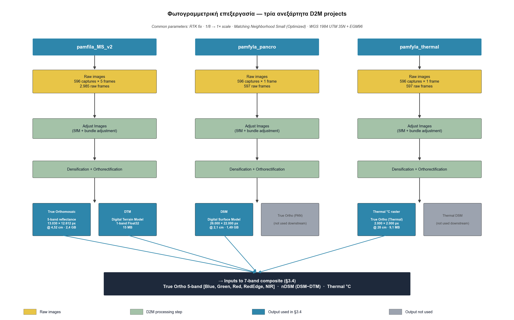
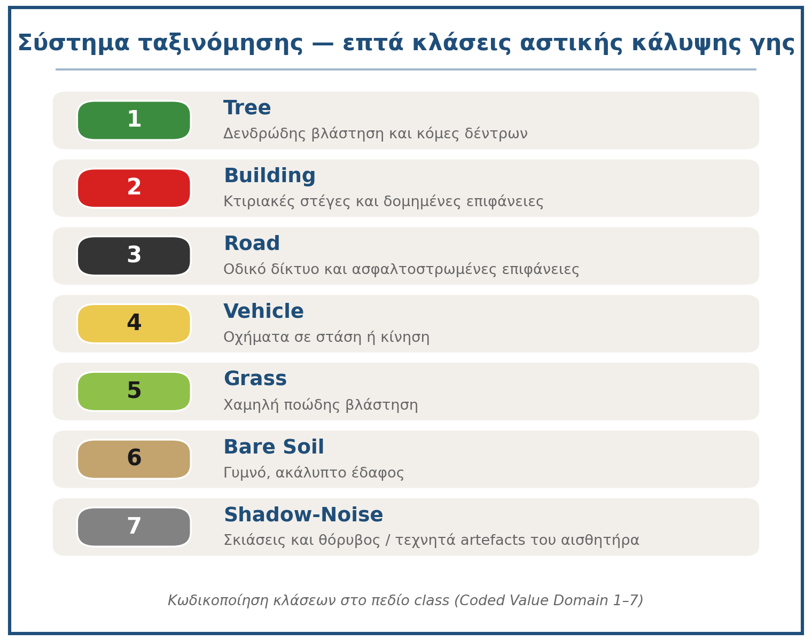
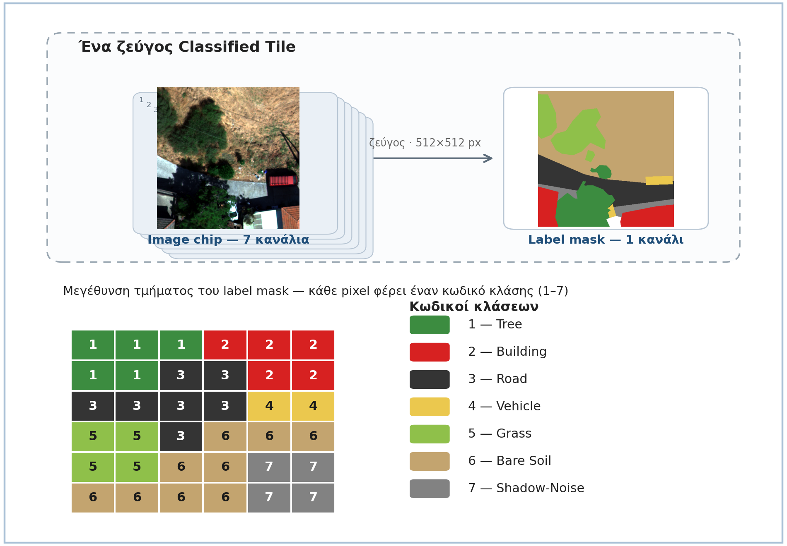
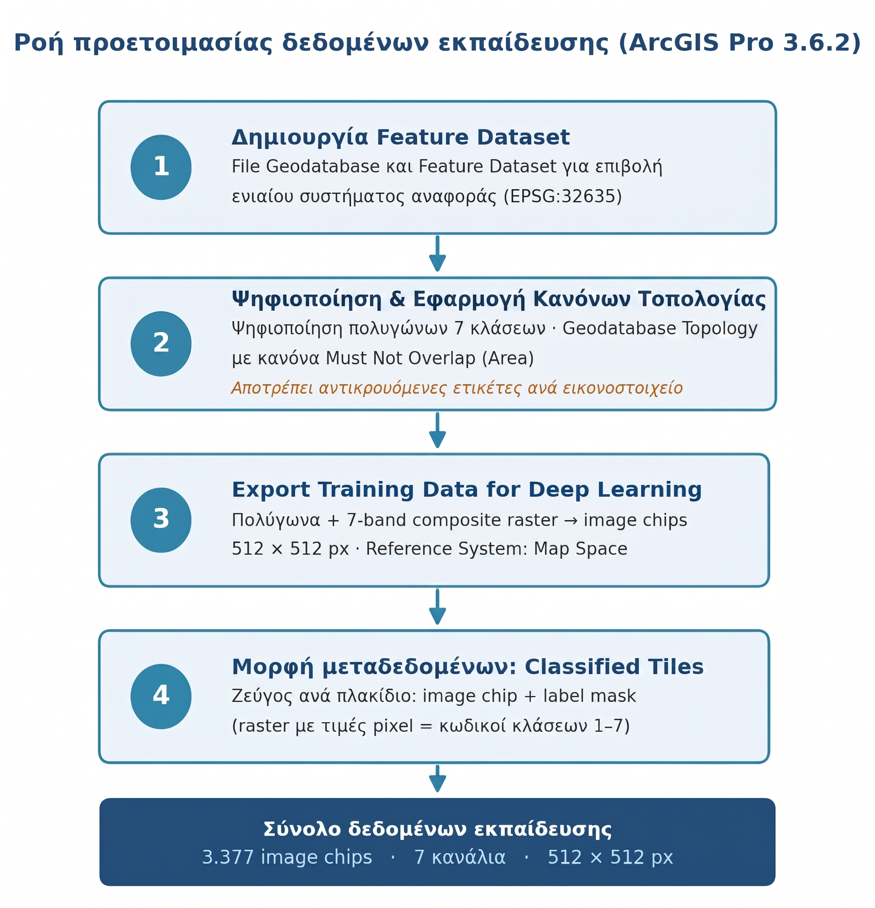
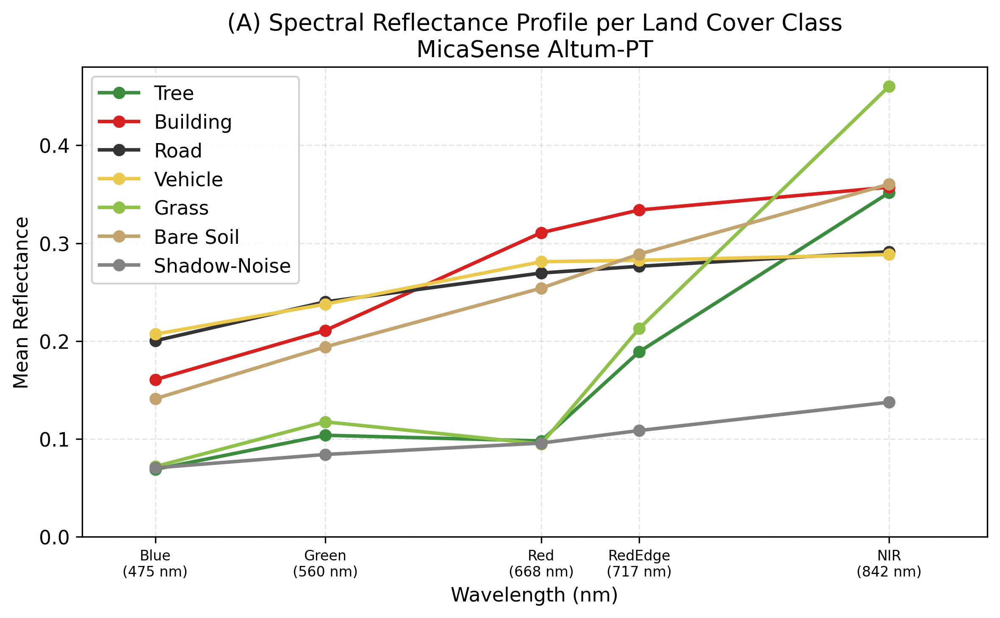
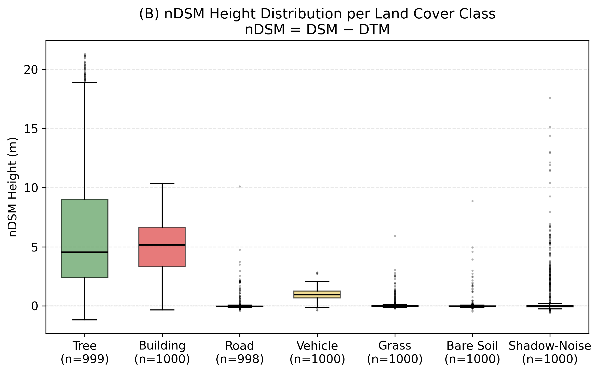
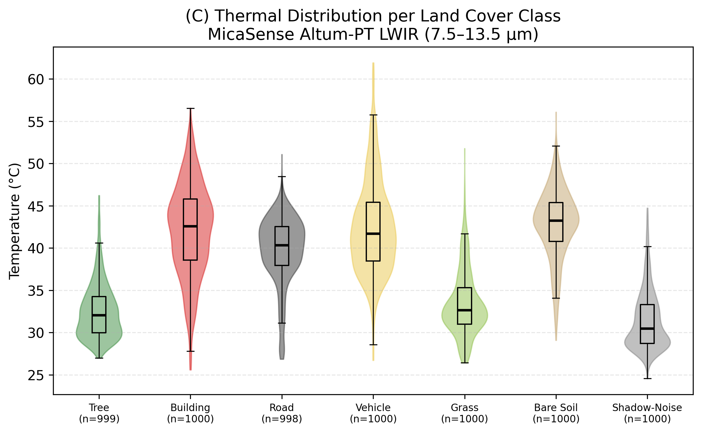
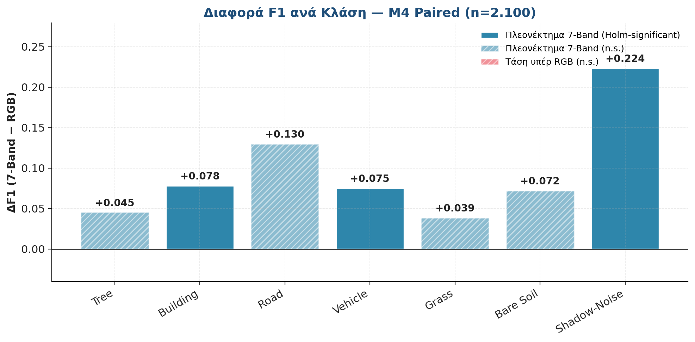

MSc Thesis Defence · University of the Aegean · 2026Υποστήριξη Διπλωματικής MSc · Πανεπιστήμιο Αιγαίου · 2026
Development of a GIS Application for the Automatic Classification of Multispectral & Thermal UAV Images Using Convolutional Neural NetworksΑνάπτυξη Εφαρμογής GIS για την Αυτόματη Ταξινόμηση Πολυφασματικών & Θερμικών Εικόνων UAV με Συνελικτικά Νευρωνικά Δίκτυα
Nikolaos Koroniadis · MSc “Geography & Applied Geoinformatics”
Supervisor: Assist. Prof. Dr. Christos Vasilakos
Committee: Prof. Dr. Nikolaos Soulakellis · Assoc. Prof. Dr. Dimitrios Kavroudakis
Mytilene, Greece · 2026
Νικόλαος Κορωνιάδης · ΠΜΣ «Γεωγραφία & Εφαρμοσμένη Γεωπληροφορική»
Επιβλέπων: Επίκ. Καθηγητής Δρ. Χρήστος Βασιλάκος
Επιτροπή: Καθηγητής Δρ. Νικόλαος Σουλακέλλης · Αναπλ. Καθηγητής Δρ. Δημήτριος Καβρουδάκης
Μυτιλήνη, Ελλάδα · 2026
The question & the roadmapΤο ερώτημα & η πορεία
Do extra channels help? And if so, why?Βοηθούν τα επιπλέον κανάλια; Κι αν ναι, γιατί;
We train the same network twice: once on 7 bands (Blue · Green · Red · RedEdge · NIR · nDSM · Thermal), once on RGB. Then we test, rigorously, whether the extra channels change the map.Εκπαιδεύουμε το ίδιο δίκτυο δύο φορές: μία με 7 κανάλια (Blue · Green · Red · RedEdge · NIR · nDSM · Thermal), μία με RGB. Έπειτα ελέγχουμε, αυστηρά, αν τα επιπλέον κανάλια αλλάζουν τον χάρτη.
Our stack sits at the end of this line: DeepLabV3 + PointRend on a ResNet-101 backbone.Η αρχιτεκτονική μας βρίσκεται στο τέλος αυτής της γραμμής: DeepLabV3 + PointRend πάνω σε backbone ResNet-101.
LeCun et al. (1989, 1998); Krizhevsky et al. (2012).
Background · the 4 + 1 vision tasksΥπόβαθρο · οι 4 + 1 εργασίες όρασης
Five ways to “see”: one class per pixel, no instancesΠέντε τρόποι να «δούμε»: μία κλάση ανά pixel, χωρίς στιγμιότυπα
Object detectionΑνίχνευση αντικειμένων
Bounding boxes + confidence – where things are, not their pixels.Πλαίσια οριοθέτησης + βεβαιότητα – πού βρίσκονται, όχι τα pixels τους.
Semantic segmentationΣημασιολογική κατάτμηση
A class for every pixel – no separate objects.Μία κλάση για κάθε pixel – χωρίς ξεχωριστά αντικείμενα.
OUR CHOICEη επιλογή μας
Instance segmentationΚατάτμηση στιγμιοτύπων
Pixels + separate instances – each object kept apart.Pixels + ξεχωριστά στιγμιότυπα – κάθε αντικείμενο χωριστά.
PanopticΠανοπτική
Semantic + instance, unified – every pixel and every object.Σημασιολογική + στιγμιοτύπων, ενοποιημένες – κάθε pixel και κάθε αντικείμενο.
The fifth task – image classification (one label per whole image) – is the trivial case. Land cover is a per-pixel question with no countable instances → semantic segmentation is the natural fit.Η πέμπτη εργασία – ταξινόμηση εικόνας (μία ετικέτα ανά εικόνα) – είναι η τετριμμένη περίπτωση. Η κάλυψη γης είναι ζήτημα ανά pixel, χωρίς μετρήσιμα στιγμιότυπα → η σημασιολογική κατάτμηση ταιριάζει φυσικά.
Kirillov et al. (2019); He et al. (2017); Ren et al. (2017); Redmon et al. (2016).
Mapping land cover from a UAV is harder than benchmark visionΗ χαρτογράφηση κάλυψης γης από UAV είναι πιο δύσκολη από τα benchmark όρασης
Computer-vision approaches for UAV land-cover mapping.Προσεγγίσεις υπολογιστικής όρασης για χαρτογράφηση κάλυψης γης με UAV.
Scale variation – a vehicle and a building share one tile, orders of magnitude apart in size.Διακύμανση κλίμακας – ένα όχημα κι ένα κτίριο συνυπάρχουν στο ίδιο πλακίδιο εικόνας, με μεγέθη που διαφέρουν κατά τάξεις μεγέθους.
Boundary precision – rooftops, roads and trees meet along thin, intricate edges.Ακρίβεια ορίων – στέγες, δρόμοι και δέντρα συναντώνται σε λεπτές, περίπλοκες ακμές.
Spectral ambiguity – different materials look alike across the visible bands.Φασματική ασάφεια – διαφορετικά υλικά μοιάζουν στις ορατές ζώνες.
Georeferencing – outputs must be orthorectified map layers, not just images.Γεωαναφορά – τα αποτελέσματα πρέπει να είναι ορθοδιορθωμένα χαρτογραφικά επίπεδα, όχι απλώς εικόνες.
Background · choosing the taskΥπόβαθρο · η επιλογή της εργασίας
For per-pixel land cover, semantic segmentation is the right toolΓια κάλυψη γης ανά pixel, η σημασιολογική κατάτμηση είναι το σωστό εργαλείο
Vision taskΕργασία όρασης
OutputΈξοδος
Per-pixel labelsΕτικέτες ανά pixel
Separates instancesΔιαχωρίζει στιγμιότυπα
Fit for land-coverΚαταλληλότητα για κάλυψη γης
Image classificationΤαξινόμηση εικόνας
one label / imageμία ετικέτα / εικόνα
✗
✗
LowΧαμηλή
Object detectionΑνίχνευση αντικειμένων
bounding boxesπλαίσια οριοθέτησης
✗
✓
LowΧαμηλή
Semantic segmentationΣημασιολογική κατάτμηση
class / pixelκλάση / pixel
✓
✗
Best ✓Άριστη ✓
Instance segmentationΚατάτμηση στιγμιοτύπων
pixels + objectspixels + αντικείμενα
✓
✓
OverkillΥπερβολική
Panoptic segmentationΠανοπτική κατάτμηση
semantic + instanceσημασιολογική + στιγμιοτύπων
✓
✓
OverkillΥπερβολική
Land cover has no countable instances – every pixel just needs a class. Semantic segmentation delivers exactly that, at the lowest complexity.Η κάλυψη γης δεν έχει μετρήσιμα στιγμιότυπα – κάθε pixel χρειάζεται απλώς μία κλάση. Η σημασιολογική κατάτμηση το προσφέρει ακριβώς αυτό, με τη μικρότερη πολυπλοκότητα.
Naively stacking more layers degrades accuracy (vanishing gradients).Η αφελής στοίβαξη περισσότερων επιπέδων υποβαθμίζει την ακρίβεια (vanishing gradients).
Residual connections let a layer learn a correction – gradients flow freely.Οι υπολειμματικές συνδέσεις επιτρέπουν σε ένα επίπεδο να μάθει μια διόρθωση – οι gradients ρέουν ελεύθερα.
Result: 50/101/152-layer networks train reliably → we use ResNet-101.Αποτέλεσμα: δίκτυα 50/101/152 επιπέδων εκπαιδεύονται αξιόπιστα → χρησιμοποιούμε ResNet-101.
He et al. (2016).
Architecture · DeepLab family · atrous & ASPPΑρχιτεκτονική · οικογένεια DeepLab · atrous & ASPP
DeepLab keeps resolution and context together, via atrous convolution & ASPPΤο DeepLab κρατά μαζί ανάλυση και συγκείμενο, μέσω διεσταλμένης συνέλιξης & ASPP
Evolution of the DeepLab family (v1 → v3+).Η εξέλιξη της οικογένειας DeepLab (v1 → v3+).
Downsampling for context sacrifices spatial detail – bad for pixel-precise maps.Η υποδειγματοληψία για συγκείμενο θυσιάζει τη χωρική λεπτομέρεια – κακό για χάρτες ακριβείας ανά pixel.
Atrous (dilated) convolution enlarges the receptive field at the same resolution – no extra parameters.Η atrous (διεσταλμένη) συνέλιξη διευρύνει το δεκτικό πεδίο στην ίδια ανάλυση – χωρίς επιπλέον παραμέτρους.
ASPP runs atrous convolutions at several rates in parallel → multi-scale context.Το ASPP τρέχει atrous συνελίξεις σε πολλούς ρυθμούς παράλληλα → συγκείμενο πολλαπλών κλιμάκων.
DeepLab evolved v1 → v2 → v3 → v3+ ; we build on DeepLabV3.Το DeepLab εξελίχθηκε v1 → v2 → v3 → v3+· εμείς χτίζουμε πάνω στο DeepLabV3.
Chen et al. (2015, 2017, 2018a, 2018b).
Architecture · our model stackΑρχιτεκτονική · η στοίβα του μοντέλου μας
Our stack adds crisp boundaries on top of DeepLabV3's contextΗ στοίβα μας προσθέτει ευκρινή όρια πάνω στο συγκείμενο του DeepLabV3
BackboneBackbone
ResNet-101
Deep, transfer-learned feature extractorΒαθύς εξαγωγέας χαρακτηριστικών με transfer learning
PointRend treats segmentation as rendering – spending computation exactly where boundaries are ambiguous. That precision is what later separates Buildings, Vehicles and Roads.Το PointRend αντιμετωπίζει την κατάτμηση ως rendering – δαπανώντας υπολογισμό ακριβώς εκεί που τα όρια είναι ασαφή. Αυτή η ακρίβεια είναι που αργότερα ξεχωρίζει Building, Vehicle και Road.
Chen et al. (2017); Kirillov et al. (2020).
Architecture · a shared vocabularyΑρχιτεκτονική · ένα κοινό λεξιλόγιο
A shared vocabulary for the rest of the talkΈνα κοινό λεξιλόγιο για την υπόλοιπη παρουσίαση
Backbone
Pretrained CNN (ResNet-101) that extracts hierarchical features.Προεκπαιδευμένο CNN (ResNet-101) που εξάγει ιεραρχικά χαρακτηριστικά.
Transfer learning
Reuse ImageNet-pretrained weights, fine-tune on our data – less data needed.Επαναχρησιμοποίηση βαρών προεκπαιδευμένων σε ImageNet, fine-tuning στα δεδομένα μας – λιγότερα δεδομένα.
Receptive fieldΔεκτικό πεδίο
The input region a single output neuron “sees”.Η περιοχή εισόδου που «βλέπει» ένας νευρώνας εξόδου.
Inserts gaps in the kernel to widen the receptive field without losing resolution.Εισάγει κενά στον πυρήνα ώστε να διευρύνει το δεκτικό πεδίο χωρίς απώλεια ανάλυσης.
ASPP
Atrous Spatial Pyramid Pooling – parallel atrous convs at multiple rates.Atrous Spatial Pyramid Pooling – παράλληλες atrous συνελίξεις σε πολλούς ρυθμούς.
PointRend
Boundary-refinement module that treats segmentation as point-wise rendering.Μονάδα εκλέπτυνσης ορίων που αντιμετωπίζει την κατάτμηση ως rendering ανά σημείο.
Marmanis et al. (2016); Penatti et al. (2015).
Data · the MicaSense Altum-PT sensorΔεδομένα · ο αισθητήρας MicaSense Altum-PT
One sensor, three subsystems: multispectral, panchromatic & thermalΈνας αισθητήρας, τρία υποσυστήματα: πολυφασματικό, παγχρωματικό & θερμικό
Spectral coverage: 5 MS bands (VNIR), panchromatic (visible), thermal LWIR.Φασματική κάλυψη: 5 ζώνες MS (VNIR), παγχρωματική (ορατό), θερμική LWIR.
5 multispectral bands (VNIR): Blue 475 · Green 560 · Red 668 · RedEdge 717 · NIR 842 nm.5 πολυφασματικές ζώνες (VNIR): Blue 475 · Green 560 · Red 668 · RedEdge 717 · NIR 842 nm.
Ground control pointsΣημεία ελέγχου εδάφους (GCPs)
0
0
0
All three solved without GCPs (RTK/PPK), > 99.8% images calibrated, RMSE < 0.4 px. The orthos were then resampled to a common 4.52 cm grid → the 7-band stack.Και τα τρία επιλύθηκαν χωρίς GCPs (RTK/PPK), > 99,8% εικόνες βαθμονομημένες, RMSE < 0,4 px. Στη συνέχεια τα ορθομωσαϊκά επαναδειγματοληπτήθηκαν σε κοινό πλέγμα 4,52 cm → η στοίβα 7 καναλιών.
Every frame carries five metadata namespaces, the basis for calibration & georeferencingΚάθε καρέ φέρει πέντε namespaces μεταδεδομένων, τη βάση για βαθμονόμηση & γεωαναφορά
FLIRThermal (LWIR) calibration parameters for the temperature band.Παράμετροι θερμικής (LWIR) βαθμονόμησης για τη ζώνη θερμοκρασίας.
Data · photogrammetric processingΔεδομένα · φωτογραμμετρική επεξεργασία
Photogrammetric Processing: three independent projectsΦωτογραμμετρική επεξεργασία: τρία ανεξάρτητα έργα

Three Drone2Map projects (multispectral · panchromatic · thermal) → orthomosaics, a DSM and a DTM.Τρία projects Drone2Map (πολυφασματικό · παγχρωματικό · θερμικό) → ορθομωσαϊκά, ένα DSM κι ένα DTM.
Data · 7-band composite productionΔεδομένα · παραγωγή σύνθετου 7 καναλιών
Units: reflectance · nDSM m · thermal °C.Μονάδες: ανακλαστικότητα · nDSM m · θερμικό °C.
Input: the 7-band raster, not RGB.Είσοδος: ο raster 7 καναλιών, όχι RGB.
Data · the geometry channel (nDSM)Δεδομένα · το κανάλι γεωμετρίας (nDSM)
nDSM = DSM − DTM: true object height, not terrain reliefnDSM = DSM − DTM: πραγματικό ύψος αντικειμένου, όχι ανάγλυφο
Stage 1 · DSM
A small step, a decisive signal — context engineering. nDSM hands the CNN clean, terrain-independent geometry: a car is 1.5 m tall in the valley or on the hilltop. The model learns object shape and height, not the accident of where the ground happens to be.Ένα μικρό βήμα, ένα καθοριστικό σήμα — context engineering. Το nDSM δίνει στο CNN καθαρή, ανεξάρτητη από το ανάγλυφο γεωμετρία: ένα αμάξι είναι 1,5 m στην κοιλάδα ή στην κορυφή. Το μοντέλο μαθαίνει σχήμα και ύψος, όχι πού τυχαίνει να βρίσκεται το έδαφος.
Classes · the labelling schemeΚλάσεις · το σύστημα ταξινόμησης
Seven urban land-cover classes: six surfaces plus a technical classΕπτά κλάσεις αστικής κάλυψης γης: έξι επιφάνειες συν μία τεχνική κλάση

The seven classes with their canonical colours (coded 1–7 in the geodatabase).Οι επτά κλάσεις με τα καθιερωμένα χρώματά τους (κωδικοποιημένες 1–7 στη γεωβάση).
VegetationΒλάστηση
Tree – canopy & woody vegetation– κόμη & ξυλώδης βλάστηση
Shadow-Noise – deep shadows, not a cover type– βαθιές σκιές, όχι τύπος κάλυψης
Classes · the training sampleΚλάσεις · το δείγμα εκπαίδευσης
Each sample is an image chip paired with a per-pixel label maskΚάθε δείγμα είναι ένα image chip σε ζεύγος με μια μάσκα ετικετών ανά pixel

Schematic – each pixel of the mask carries a class code (1–7).Σχηματικά – κάθε pixel της μάσκας φέρει έναν κωδικό κλάσης (1–7).
A real chip / mask pair from the training set.Ένα πραγματικό ζεύγος chip / μάσκας από το σύνολο εκπαίδευσης.
DeepLab needs the Classified Tiles format: each chip ships with a mask whose pixel values are the class labels.Το DeepLab χρειάζεται τη μορφή Classified Tiles: κάθε chip συνοδεύεται από μια μάσκα της οποίας οι τιμές pixel είναι οι ετικέτες κλάσεων.
Classes · building the training setΚλάσεις · η δημιουργία του συνόλου εκπαίδευσης
Four steps from digitized polygons to deep-learning chipsΤέσσερα βήματα από ψηφιοποιημένα πολύγωνα σε chips βαθιάς μάθησης

The data-preparation workflow in ArcGIS Pro.Η ροή προετοιμασίας δεδομένων στο ArcGIS Pro.
A Feature Dataset in a File Geodatabase fixes one shared CRS – identical to the 7-band raster.Ένα Feature Dataset σε File Geodatabase ορίζει ένα κοινό σύστημα αναφοράς – ταυτόσημο με τον raster 7 καναλιών.
Digitize polygons for the 7 classes, then enforce topology “Must Not Overlap” – one pixel ⇒ exactly one class (no conflicting labels).Ψηφιοποίηση πολυγώνων για τις 7 κλάσεις, και μετά επιβολή τοπολογίας «Must Not Overlap» – ένα pixel ⇒ ακριβώς μία κλάση (χωρίς αντικρουόμενες ετικέτες).
Export Training Data for Deep Learning → 512×512 image chips + label masks (Classified Tiles).Export Training Data for Deep Learning → image chips 512×512 + μάσκες ετικετών (Classified Tiles).
From 293 polygons → 3,377 chips + masks, expanded at train time by augmentation (incl. mixup).Από 293 πολύγωνα → 3.377 chips + μάσκες, που επεκτείνονται κατά την εκπαίδευση με augmentation (συμπ. mixup).
ESRI (n.d.); Congalton & Green (2019); Zhang et al. (2018).
Classes · distribution & imbalanceΚλάσεις · κατανομή & ανισορροπία
Severe class imbalance: Bare Soil 54.9% vs Vehicle 0.8%Έντονη ανισορροπία κλάσεων: Bare Soil 54,9% vs Vehicle 0,8%
Share of labelled pixels across all seven classes:Ποσοστό επισημασμένων pixels στις επτά κλάσεις:
Bare Soil54.9%
Road11.3%
Tree10.3%
Building9.4%
Grass7.0%
Shadow-Noise6.3%
Vehicle0.8%
Bare Soil dominates – more than the other six classes combined.Το Bare Soil κυριαρχεί – περισσότερο από τις άλλες έξι κλάσεις μαζί.
Vehicle is the rarest, under 1% of pixels.Το Vehicle είναι το σπανιότερο, κάτω από 1% των pixels.
The imbalance is spatial: a few huge Bare-Soil polygons; fragmented Shadow-Noise has the most instances.Η ανισορροπία είναι χωρική: λίγα τεράστια πολύγωνα Bare Soil· το κατακερματισμένο Shadow-Noise έχει τα περισσότερα στιγμιότυπα.
Spectrum separates vegetation, but built-up classes overlapΤο φάσμα ξεχωρίζει τη βλάστηση, μα οι δομημένες κλάσεις επικαλύπτονται

Mean reflectance per class, 5 MS bands (Blue 475 → NIR 842 nm) · 1,000 points/class.Μέση ανακλαστικότητα ανά κλάση, 5 ζώνες MS (Blue 475 → NIR 842 nm) · 1.000 σημεία/κλάση.
✓Vegetation stands out: Grass & Tree spike in NIR (sharp red→red-edge rise).Η βλάστηση ξεχωρίζει: Grass & Tree εκτοξεύονται στο NIR (απότομη άνοδος red→red-edge).
✗Built-up overlaps: Road ≈ Vehicle through visible–red-edge; Bare Soil ≈ Building in NIR.Οι δομημένες επικαλύπτονται: Road ≈ Vehicle στο ορατό–red-edge· Bare Soil ≈ Building στο NIR.
✗Shadow-Noise is uniformly low – easily confused with any dark surface.Το Shadow-Noise είναι ομοιόμορφα χαμηλό – εύκολα συγχέεται με κάθε σκούρα επιφάνεια.
Colour alone cannot separate the impervious classes. Something else must.Το χρώμα από μόνο του δεν μπορεί να διαχωρίσει τις αδιαπέρατες κλάσεις. Κάτι άλλο πρέπει.
Geometry isolates exactly what colour confusesΗ γεωμετρία απομονώνει ακριβώς ό,τι μπερδεύει το χρώμα

Height above ground (nDSM) per class.Ύψος πάνω από το έδαφος (nDSM) ανά κλάση.
✓Elevated: Building ≈ 5 m (peaks > 10 m) and Tree ≈ 4.5 m (IQR 2–9 m) separate sharply.Υπερυψωμένα: Building ≈ 5 m (κορυφές > 10 m) και Tree ≈ 4,5 m (IQR 2–9 m) διαχωρίζονται καθαρά.
✓Vehicle ≈ 1 m – small but distinct from the ground.Vehicle ≈ 1 m – μικρό μα διακριτό από το έδαφος.
▬Road, Grass, Bare Soil, Shadow-Noise collapse near 0 m.Road, Grass, Bare Soil, Shadow-Noise καταρρέουν κοντά στα 0 m.
nDSM rescues Building & Vehicle – two of the classes spectrum confused. The first pillar of the advantage.Το nDSM σώζει τα Building & Vehicle – δύο από τις κλάσεις που μπέρδεψε το φάσμα. Ο πρώτος πυλώνας του πλεονεκτήματος.
Heat splits surfaces with near-identical spectraΗ θερμότητα χωρίζει επιφάνειες με σχεδόν ταυτόσημα φάσματα

LWIR temperature distribution per class.Κατανομή θερμοκρασίας LWIR ανά κλάση.
▲Hot (40–43 °C): Building, Road, Vehicle, Bare Soil – Vehicle has a tail past 45 °C.Θερμά (40–43 °C): Building, Road, Vehicle, Bare Soil – το Vehicle έχει ουρά πέρα από τους 45 °C.
·Two clean thermal groups, regardless of colour.Δύο καθαρές θερμικές ομάδες, ανεξάρτητα από το χρώμα.
Thermal distinguishes material, not colour – e.g. warm asphalt vs cool grass. The second pillar.Το θερμικό διακρίνει το υλικό, όχι το χρώμα – π.χ. ζεστή άσφαλτος vs δροσερή χλόη. Ο δεύτερος πυλώνας.
Each dimension fixes a different confusion; together they separate everythingΚάθε διάσταση λύνει διαφορετική σύγχυση· μαζί διαχωρίζουν τα πάντα
SpectrumΦάσμα
Separates vegetation (NIR) – but built-up surfaces overlap.Διαχωρίζει τη βλάστηση (NIR) – μα οι δομημένες επιφάνειες επικαλύπτονται.
Geometry – nDSMΓεωμετρία – nDSM
Separates elevation: Building, Tree, Vehicle vs flat ground.Διαχωρίζει το ύψος: Building, Tree, Vehicle vs επίπεδο έδαφος.
Heat – LWIRΘερμότητα – LWIR
Separates material: hot impervious vs cool vegetation.Διαχωρίζει το υλικό: θερμές αδιαπέρατες vs δροσερή βλάστηση.
No single dimension is enough; their combination is what makes the 7-band classes separable – the hypothesis we now test statistically.Καμία μεμονωμένη διάσταση δεν αρκεί· ο συνδυασμός τους είναι που κάνει διαχωρίσιμες τις κλάσεις των 7 καναλιών – η υπόθεση που τώρα ελέγχουμε στατιστικά.
Interactive · Spectral 3D ExplorerΔιαδραστικό · Spectral 3D Explorer
Backbone ImageNet-pretrained, fully unfrozen – extra channels initialised random.Backbone προεκπαιδευμένο σε ImageNet, πλήρως ξεπαγωμένο – τα επιπλέον κανάλια αρχικοποιήθηκαν τυχαία.
Imbalance handling: loss = 0.6·Focal + 0.4·Dice (macro) + class balancing + mixup.Διαχείριση ανισορροπίας: loss = 0,6·Focal + 0,4·Dice (macro) + class balancing + mixup.
The only deliberate difference is the input – 7 channels vs 3 (RGB). A controlled experiment: any performance gap is attributable to the channels.Η μόνη σκόπιμη διαφορά είναι η είσοδος – 7 κανάλια vs 3 (RGB). Ένα ελεγχόμενο πείραμα: κάθε διαφορά επίδοσης αποδίδεται στα κανάλια.
Lin et al. (2017); Milletari et al. (2016); Sudre et al. (2017).
Training · convergenceΕκπαίδευση · σύγκλιση
The extra channels converge to a markedly better optimumΤα επιπλέον κανάλια συγκλίνουν σε αισθητά καλύτερο βέλτιστο
7-Band
RGB baselineRGB (βάση)
7-Band: 25 epochs (best ~18) → val loss 0.22 · acc 0.97 · Dice 0.97.
RGB: stops at 12 (best 5) → val loss 0.38 · acc 0.89 · Dice 0.89. Both smooth – no overfitting.7-Band: 25 epochs (καλύτερο ~18) → val loss 0,22 · acc 0,97 · Dice 0,97.
RGB: σταματά στο 12 (καλύτερο 5) → val loss 0,38 · acc 0,89 · Dice 0,89. Και τα δύο ομαλά – χωρίς overfitting.
Interactive · loss per epochΔιαδραστικό · loss ανά epoch
These are internal metrics – computed separately per model, not on the same points. Encouraging, but not yet a fair test. The paired comparison (M4) settles it.Αυτές είναι εσωτερικές μετρικές – υπολογισμένες ξεχωριστά ανά μοντέλο, όχι στα ίδια σημεία. Ενθαρρυντικές, μα όχι ακόμη δίκαιη δοκιμή. Η ζευγαρωτή σύγκριση (M4) το κρίνει.
Evaluation · four complementary methodsΑξιολόγηση · τέσσερις συμπληρωματικές μέθοδοι
Four independent methods, so the verdict can't be an artefact of one testΤέσσερις ανεξάρτητες μέθοδοι, ώστε η ετυμηγορία να μην είναι αποτέλεσμα ενός μόνο ελέγχου
M1
InternalΕσωτερική
Metrics from each model's EMD (80/20 split).Μετρικές από το EMD κάθε μοντέλου (διαχωρισμός 80/20).
M2
Per-chipΑνά chip
Independent re-computation on held-out image chips.Ανεξάρτητος επανυπολογισμός σε held-out image chips.
M3
Full sceneΠλήρης σκηνή
Pixel-for-pixel over the whole raster (OA 95.1% vs 89.8%).Pixel-προς-pixel σε όλο τον raster (OA 95,1% vs 89,8%).
M4
Paired samplingΖευγαρωτή δειγματοληψία
The rigorous, statistically valid comparison.Η αυστηρή, στατιστικά έγκυρη σύγκριση.
All four agree – the advantage is structural, not a sampling fluke. M4 is the one we then test statistically.Και οι τέσσερις συμφωνούν – το πλεονέκτημα είναι δομικό, όχι τυχαίο της δειγματοληψίας. Το M4 είναι αυτό που μετά ελέγχουμε στατιστικά.
M4: the same 2,100 points judge both models, which makes the stats validM4: τα ίδια 2.100 σημεία κρίνουν και τα δύο μοντέλα, κι αυτό κάνει έγκυρη τη στατιστική
2,100
stratified pointsστρωματοποιημένα σημεία
300
per class (balanced)ανά κλάση (ισορροπημένα)
Stratified random sampling (Congalton & Green protocol) – equal coverage of rare classes, not pixel-weighted.Στρωματοποιημένη τυχαία δειγματοληψία (πρωτόκολλο Congalton & Green) – ίση κάλυψη των σπάνιων κλάσεων, όχι σταθμισμένη ανά pixel.
Paired design: each point carries ground truth + the 7-Band prediction + the RGB prediction.Ζευγαρωτός σχεδιασμός: κάθε σημείο φέρει την αλήθεια εδάφους + την πρόβλεψη 7-Band + την πρόβλεψη RGB.
Three example points – the same points scored by both models:Τρία ενδεικτικά σημεία – τα ίδια σημεία βαθμολογημένα κι από τα δύο μοντέλα:
#
Ground truthΑλήθεια εδάφους
7-Band
RGB
1
Building
Building ✓
Building ✓
2
Tree
Tree ✓
Tree ✓
3
Shadow-Noise
Shadow-Noise ✓
Bare Soil ✗
Points 1–2 agree; point 3 is a discordant pair (7-Band right, RGB wrong) – exactly what McNemar, Holm & the paired bootstrap count.Τα σημεία 1–2 συμφωνούν· το σημείο 3 είναι ασύμφωνο ζεύγος (7-Band σωστό, RGB λάθος) – ακριβώς αυτό που μετρούν ο McNemar, ο Holm & το paired bootstrap.
Congalton & Green (2019); Olofsson et al. (2014); Stehman (2014).
The disagreement is systematic, not noise: 7-Band wins the contested pixels overwhelmingly.Η διαφωνία είναι συστηματική, όχι θόρυβος: το 7-Band κερδίζει συντριπτικά τα αμφισβητούμενα pixels.
Raw p < 0.05 flagged 5 classes (incl. Grass & Tree). After Holm, only
Building · Vehicle · Shadow-Noise survive.Το ακατέργαστο p < 0,05 σημείωσε 5 κλάσεις (μαζί Grass & Tree). Μετά τον Holm, επιβιώνουν μόνο
Building · Vehicle · Shadow-Noise.
Resample 10,000 times: the advantage's interval never touches zeroΕπαναδειγματοληψία 10.000 φορές: το διάστημα του πλεονεκτήματος δεν αγγίζει ποτέ το μηδέν
7-Band wins on every overall metric, by about ten pointsΤο 7-Band κερδίζει σε κάθε συνολική μετρική, κατά ~δέκα μονάδες
MetricΜετρική
7-Band
RGB baselineRGB (βάση)
Δ
Overall AccuracyΣυνολική Ακρίβεια
93.90%
83.29%
+10.61
Cohen's κ
92.89%
82.09%
+10.80
Macro-F1
93.99%
83.71%
+10.28
mIoU
88.87%
73.78%
+15.09
The gap is largest on mIoU (+15.1) – the strictest, overlap-based metric – confirming sharper, better-delineated regions, not just more correct pixels.Η μεγαλύτερη διαφορά είναι στο mIoU (+15,1) – την αυστηρότερη μετρική (βάσει επικάλυψης) – επιβεβαιώνοντας πιο ευκρινείς, καλύτερα οριοθετημένες περιοχές, όχι απλώς περισσότερα σωστά pixels.
Paired stratified evaluation (M4), n = 2,100; identical points for both models.Ζευγαρωτή στρωματοποιημένη αξιολόγηση (M4), n = 2.100· ίδια σημεία και για τα δύο μοντέλα.
7-Band's errors stay rare & balanced; RGB collapses on Shadow-NoiseΤα σφάλματα του 7-Band μένουν σπάνια & ισορροπημένα· το RGB καταρρέει στο Shadow-Noise
Row-normalised recall (%), n = 300 per class · rows = ground truth, columns = prediction · Difference = 7-Band − RGB (pp)Recall κανονικοποιημένο ανά γραμμή (%), n = 300 ανά κλάση · γραμμές = αλήθεια εδάφους, στήλες = πρόβλεψη · Διαφορά = 7-Band − RGB (pp)
GT＼Pred
Tr
Bl
Rd
Vh
Gr
BS
Sh
Tree
92n=277
1
·
·
·
5
2
Building
·
98n=295
·
·
·
·
·
Road
·
·
99n=297
·
·
·
·
Vehicle
1
·
2
95n=285
·
1
·
Grass
2
·
·
·
87n=261
11
·
Bare Soil
·
·
·
·
·
97n=292
1
Shadow
1
·
1
·
·
9
88n=265
GT＼Pred
Tr
Bl
Rd
Vh
Gr
BS
Sh
Tree
96n=289
·
·
·
·
4
·
Building
·
82n=226
11
2
·
2
3
Road
·
·
99n=298
·
·
·
·
Vehicle
·
·
16
82n=241
·
1
·
Grass
10
·
·
·
81n=243
9
·
Bare Soil
1
·
1
·
1
97n=289
·
Shadow
8
·
8
·
·
29
55n=163
GT＼Pred
Tr
Bl
Rd
Vh
Gr
BS
Sh
Tree
−4
+1
·
·
·
+1
+2
Building
·
+16
−11
−2
·
−2
−3
Road
·
·
0
·
·
·
·
Vehicle
+1
·
−14
+13
·
0
·
Grass
−8
·
·
·
+6
+2
·
Bare Soil
−1
·
−1
·
−1
0
+1
Shadow
−7
·
−7
·
·
−20
+33
7-Band: diagonal recall 87–99% – high and even.7-Band: διαγώνιο recall 87–99% – υψηλό κι ομοιόμορφο.
RGB: Shadow-Noise crashes to 55% (29% → Bare Soil).RGB: το Shadow-Noise καταρρέει στο 55% (29% → Bare Soil).
RGB confuses Vehicle → Road (16%) – same colour, different heat & height.Το RGB μπερδεύει Vehicle → Road (16%) – ίδιο χρώμα, διαφορετική θερμότητα & ύψος.
The Difference tab: biggest diagonal gains are Shadow +33, Building +16, Vehicle +13.Η καρτέλα Διαφορά: τα μεγαλύτερα διαγώνια κέρδη είναι Shadow +33, Building +16, Vehicle +13.
Congalton & Green (2019). · M4 paired evaluation, n = 2,100 (300 / class).
Results · per-class gains vs statistical significanceΑποτελέσματα · κέρδη ανά κλάση vs στατιστική σημαντικότητα
Every class improves, but only three gains survive correctionΚάθε κλάση βελτιώνεται, μα μόνο τρία κέρδη παραμένουν σημαντικά μετά τη διόρθωση

ΔF1 per class (7-Band − RGB) – all positive.ΔF1 ανά κλάση (7-Band − RGB) – όλα θετικά.
ClassΚλάση
ΔF1
Holm
Shadow-Noise
+22.35
✓ ***
Road
+11.81
ns
Building
+7.82
✓ ***
Grass
+7.62
ns
Vehicle
+7.52
✓ ***
Bare Soil
+7.22
ns
Tree
+4.54
ns
A big ΔF1 (e.g. Road +11.8) can still be ns – few points disagree. Significant: Building · Vehicle · Shadow-Noise.Ένα μεγάλο ΔF1 (π.χ. Road +11,8) μπορεί να είναι ns – λίγα σημεία διαφωνούν. Σημαντικά: Building · Vehicle · Shadow-Noise.
McNemar (1947); Holm (1979).
Results · the anatomy of the advantageΑποτελέσματα · η ανατομία του πλεονεκτήματος
The advantage is geometry & heat, not colour (H3 overturned)Το πλεονέκτημα είναι γεωμετρία & θερμότητα, όχι χρώμα (η H3 ανατρέπεται)
✓ Carried the gain – the three significant classes✓ Έφεραν το κέρδος – οι τρεις σημαντικές κλάσεις
Building – tall nDSM + hot roofs LWIR(b 69 · c 0)Building – ψηλό nDSM + θερμές στέγες LWIR(b 69 · c 0)
Vehicle – hot metal LWIR + distinct nDSM(b 47 · c 3)Vehicle – θερμό μέταλλο LWIR + διακριτό nDSM(b 47 · c 3)
Shadow-Noise – dark pixels split by LWIR + nDSM(b 104 · c 2)Shadow-Noise – σκούρα pixels διαχωρίζονται με LWIR + nDSM(b 104 · c 2)
✗ Did NOT need extra channels✗ ΔΕΝ χρειάστηκαν επιπλέον κανάλια
Tree & Grass – even though 7-Band adds the NIR/RedEdge bands that separate vegetation, neither class gains significantly.Tree & Grass – παρότι το 7-Band προσθέτει τις ζώνες NIR/RedEdge που ξεχωρίζουν τη βλάστηση, καμία από τις δύο δεν κερδίζει σημαντικά.
After Holm correction the vegetation gains vanish → the extra spectral bands are not what wins.Μετά τη διόρθωση Holm τα κέρδη της βλάστησης εξαφανίζονται → δεν είναι οι επιπλέον φασματικές ζώνες αυτό που κερδίζει.
H3 overturned: the multispectral advantage is driven by nDSM (geometry) and LWIR (thermal) – the non-vegetation, structure-and-heat classes – not by spectrum or vegetation indices.Η H3 ανατρέπεται: το πολυφασματικό πλεονέκτημα οφείλεται στο nDSM (γεωμετρία) και στο LWIR (θερμότητα) – στις κλάσεις δομής-και-θερμότητας, όχι βλάστησης – όχι στο φάσμα ή σε δείκτες βλάστησης.
Audebert et al. (2018); Li et al. (2023); Buyukdemircioglu et al. (2022); Khoshboresh Masouleh & Shah-Hosseini (2019); Morrison et al. (2021); Li et al. (2015).
Results · a metrics cautionary taleΑποτελέσματα · μια προειδοποίηση για τις μετρικές
The Tree “paradox”: RGB has higher recall, yet 7-Band has higher F1Το «παράδοξο» του Tree: το RGB έχει υψηλότερο recall, μα το 7-Band υψηλότερο F1
Tree
7-Band
RGB
Recall
92.3%
96.3%
Precision
95.2%
83.1%
F1
93.7%
89.2%
By recall alone, RGB looks “better at trees” – it catches more tree pixels (0.963).Με μόνο το recall, το RGB φαίνεται «καλύτερο στα δέντρα» – πιάνει περισσότερα tree pixels (0,963).
But it over-predicts: precision drops to 0.83. 7-Band is far more precise (0.95) → higher F1.Μα υπερ-προβλέπει: το precision πέφτει στο 0,83. Το 7-Band είναι πολύ πιο ακριβές (0,95) → υψηλότερο F1.
The ΔF1 is the smallest of all classes (+4.5) and not significant after Holm.Το ΔF1 είναι το μικρότερο όλων των κλάσεων (+4,5) και μη σημαντικό μετά τον Holm.
Lesson: a single metric misleads – and vegetation is exactly where RGB is already strong.Δίδαγμα: μία μόνο μετρική παραπλανά – και η βλάστηση είναι ακριβώς εκεί που το RGB είναι ήδη ισχυρό.
Farhadpour et al. (2024); Foody (2020).
Map & tool · the composite mapΧάρτης & εργαλείο · ο σύνθετος χάρτης
One map, three readings: height, land cover, and heatΈνας χάρτης, τρεις αναγνώσεις: ύψος, κάλυψη γης και θερμότητα
Three diagonal zones – elevation · classification · thermal – over shaded relief, with RGB magnifier lenses (ArcPy + matplotlib, poster 66×38.6 cm).Τρεις διαγώνιες ζώνες – υψόμετρο · ταξινόμηση · θερμικό – πάνω σε σκιασμένο ανάγλυφο, με μεγεθυντικούς φακούς RGB (ArcPy + matplotlib, αφίσα 66×38,6 cm).
From raster to usable vectors: a four-tool toolboxΑπό raster σε αξιοποιήσιμα διανύσματα: μια εργαλειοθήκη τεσσάρων εργαλείων
An ArcGIS Python Toolbox that turns the classified raster into structured vector layers using transparent, deterministic geometric, elevation & topological rules – no black box.Μια ArcGIS Python Toolbox που μετατρέπει τον ταξινομημένο raster σε δομημένα διανυσματικά επίπεδα με διαφανείς, ντετερμινιστικούς γεωμετρικούς, υψομετρικούς & τοπολογικούς κανόνες – κανένα μαύρο κουτί.
Four questions, four answersΤέσσερα ερωτήματα, τέσσερις απαντήσεις
RQ1 · Architecture. DeepLabV3 + PointRend / ResNet-101 fits high-GSD, imbalanced data – both models converge cleanly, no overfitting. H1 ✓RQ1 · Αρχιτεκτονική. Το DeepLabV3 + PointRend / ResNet-101 ταιριάζει σε δεδομένα υψηλού GSD με ανισορροπία κλάσεων – και τα δύο μοντέλα συγκλίνουν καθαρά, χωρίς overfitting. H1 ✓
RQ2 · Overall accuracy. 7-Band is significantly better – McNemar p ≈ 8.6×10⁻⁴⁰, all bootstrap 95% CIs > 0. H2 ✓RQ2 · Συνολική ακρίβεια. Το 7-Band είναι σημαντικά καλύτερο – McNemar p ≈ 8,6×10⁻⁴⁰, όλα τα 95% CI του bootstrap > 0. H2 ✓
RQ3 · Anatomy. Advantage is significant only in Building (nDSM), Vehicle & Shadow-Noise (LWIR) – not vegetation. H3 overturnedRQ3 · Ανατομία. Το πλεονέκτημα είναι σημαντικό μόνο σε Building (nDSM), Vehicle & Shadow-Noise (LWIR) – όχι στη βλάστηση. H3 ανατρέπεται
RQ4 · Geospatial product. The raster converts to structured vector layers via the Toolbox. H4 ✓RQ4 · Γεωχωρικό προϊόν. Ο raster μετατρέπεται σε δομημένα διανυσματικά επίπεδα μέσω της Εργαλειοθήκης. H4 ✓
The deeper lesson: more channels help only when they add non-spectral information – geometry and heat – that a strong spatial model can't already infer from colour.Το βαθύτερο δίδαγμα: τα περισσότερα κανάλια βοηθούν μόνο όταν προσθέτουν μη-φασματική πληροφορία – γεωμετρία και θερμότητα – που ένα ισχυρό χωρικό μοντέλο δεν μπορεί ήδη να συμπεράνει από το χρώμα.
Closing · limitationsΚλείσιμο · περιορισμοί
What bounds these conclusionsΤι οριοθετεί αυτά τα συμπεράσματα
Single site – one urban typology (Pamfila); transfer to other morphologies needs independent validation.Ένας μόνο τόπος – μία αστική τυπολογία (Παμφίλα)· η μεταφορά σε άλλες μορφολογίες χρειάζεται ανεξάρτητη επικύρωση.
Single flight / date / season – the thermal advantage is time-of-day & weather dependent.Μία μόνο πτήση / ημερομηνία / εποχή – το θερμικό πλεονέκτημα εξαρτάται από ώρα & καιρό.
Severe class imbalance – Bare Soil dominates; mitigated by focal + dice loss, but it bounds rare-class reliability.Έντονη ανισορροπία κλάσεων – το Bare Soil κυριαρχεί· μετριάζεται με focal + dice loss, αλλά περιορίζει την αξιοπιστία στις σπάνιες κλάσεις.
Single architecture – the spectral/spatial balance may differ for transformers or Mamba models.Μία μόνο αρχιτεκτονική – η ισορροπία φάσματος/χώρου μπορεί να διαφέρει για transformers ή μοντέλα Mamba.
Plus technical caveats: nDSM quality depends on photogrammetry; cross-environment inference is sensitive to preprocessing.Επιπλέον τεχνικές επιφυλάξεις: η ποιότητα του nDSM εξαρτάται από τη φωτογραμμετρία· η συμπερασματολογία σε διαφορετικό περιβάλλον είναι ευαίσθητη στην προεπεξεργασία.
Buda et al. (2018); Johnson & Khoshgoftaar (2019); Hughes (1968); Ülkü et al. (2022).
Two horizons: harden the findings, then make the map thinkΔύο ορίζοντες: εδραίωση των ευρημάτων, μετά να σκεφτεί ο χάρτης
Immediate extensionsΆμεσες επεκτάσεις
Multi-temporal & multi-site capture → test the thermal advantage across seasons & typologies.Πολυχρονική & πολυτοπική λήψη → έλεγχος του θερμικού πλεονεκτήματος σε εποχές & τυπολογίες.
Class-aware sampling for imbalance; re-run 7-Band vs RGB on transformers / Mamba.Δειγματοληψία με επίγνωση κλάσεων για την ανισορροπία· επανάληψη 7-Band vs RGB σε transformers / Mamba.
Quantify per-channel contribution with SHAP; inject capture metadata via FiLM.Ποσοτικοποίηση της συνεισφοράς ανά κανάλι με SHAP· εισαγωγή μεταδεδομένων λήψης μέσω FiLM.
Gu & Dao (2023); Perez et al. (2018); Wang et al. (2025); Anthropic (2024).
Thank youΕυχαριστώ
Questions & discussionΕρωτήσεις & συζήτηση
More channels help, but the advantage is geometry (nDSM) and thermal (LWIR), not colour.Τα περισσότερα κανάλια βοηθούν, αλλά το πλεονέκτημα είναι η γεωμετρία (nDSM) και η θερμότητα (LWIR), όχι το χρώμα.
Nikolaos Koroniadis · MSc “Geography & Applied Geoinformatics”, University of the Aegean
Supervisor: Assist. Prof. Dr. Christos Vasilakos · Mytilene, 2026
Νικόλαος Κορωνιάδης · ΠΜΣ «Γεωγραφία & Εφαρμοσμένη Γεωπληροφορική», Πανεπιστήμιο Αιγαίου
Επιβλέπων: Επίκ. Καθηγητής Δρ. Χρήστος Βασιλάκος · Μυτιλήνη, 2026